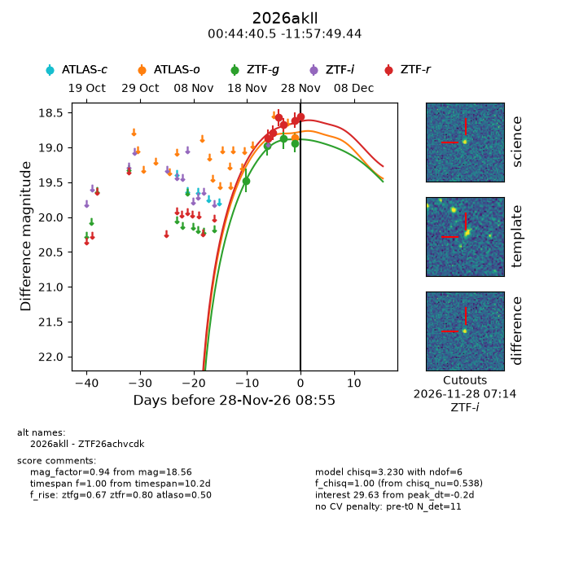
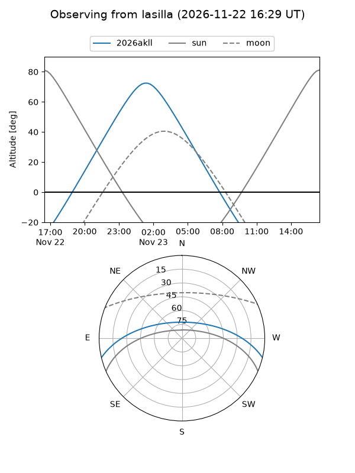
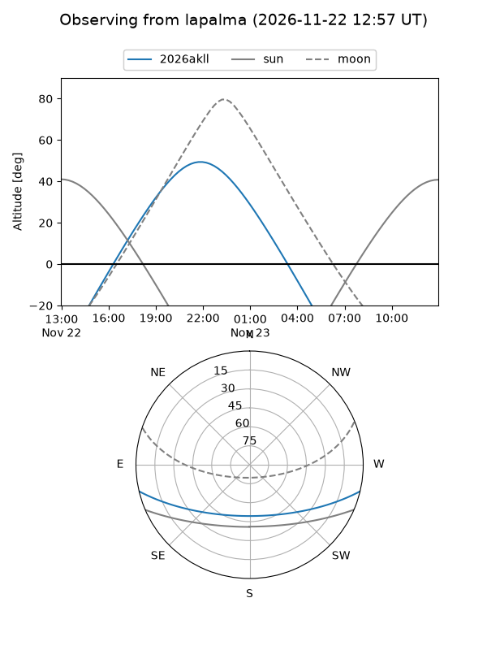
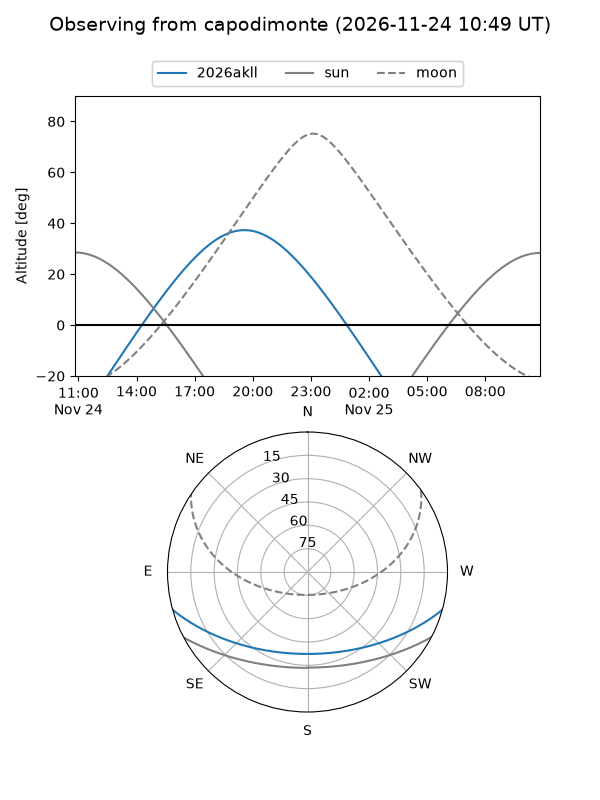
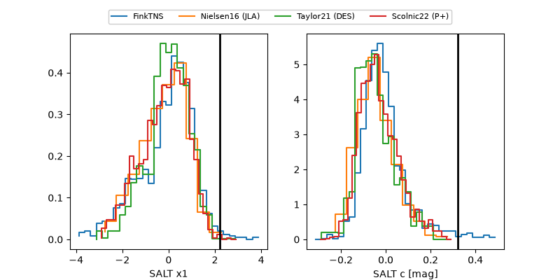

2026akll
Target 2026akll at 2026-11-28 08:56
Aliases and brokers:
FINK-ZTF: ztf.fink-portal.org/ZTF26achvcdk
Lasair-ZTF: lasair-ztf.lsst.ac.uk/objects/ZTF26achvcdk
ALeRCE-ZTF: alerce.online/object/ZTF26achvcdk
YSE-PZ: ziggy.ucolick.org/yse/transient_detail/2026akll
TNS name: wis-tns.org/object/2026akll
Direct TNS query: direct search
alt names
ZTF26achvcdk (ztf,fink_ztf)
2026akll (tns,yse)
Coordinates:
equatorial (ra, dec) = 11.1689,-11.96373
equatorial (HMS+DMS) = 00:44:40.53,-11:57:49.44
galactic (l, b) = (116.6313,-74.75269)
Flags:
peak dt: -0.2
Photometry:
last atlaso=18.85, ztfg=18.94, ztfr=18.56
1 atlaso, 4 ztfg, 6 ztfr detections
Lightcurve

Visibility



Additional plots
